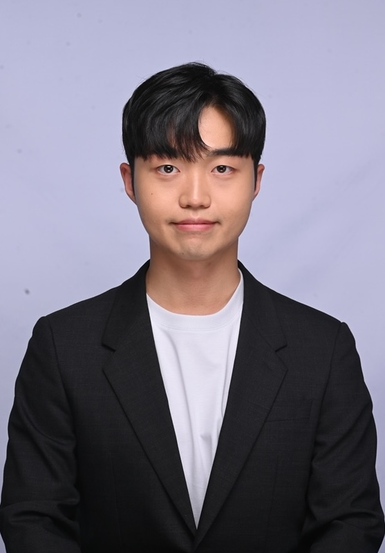

Lee Cheonwoo
M.S. Student
Introduction
Hi, my name is Lee Cheonwoo. I’m interested in data science, optimization, and numerical analysis.
Education
Korea Advanced Institute of Science and Technology (KAIST)
2018.03 - 2024.08
B.S. in Electrical Engineering
B.S. in Mathematical Sciences (Dual Degree)
Experience
Internship — Samsung Electronics Co., Ltd.
2023.02 - 2023.08
- Applied optimization methods such as the Levenberg-Marquardt method and genetic algorithms to improve circuit performance.
Awards and Honors
- Scholarship for Academic Excellence — Mathematical Sciences, KAIST (2020 Spring)
- Dean’s List — Electrical Engineering, KAIST (2022 Fall)